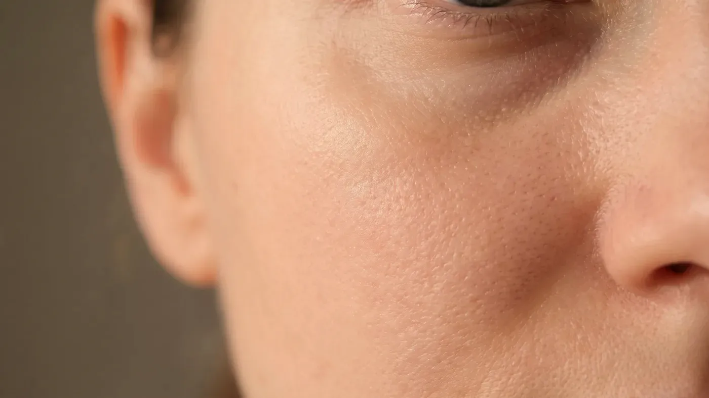

Şikâyet rehberi · Göz altı
Göz altındaki koyuluğun birden çok kaynağı olabilir
Koyu görünüm beş ayrı kaynaktan gelebilir: deride artan pigment, ince deriden seçilen damarlar, zamanla incelen deri, gözyaşı oluğunda azalan hacim ve biriken sıvı. Çoğu kişide bunlardan birkaçı bir aradadır. Öne çıkan kaynak bulunmadan seçilen bir yöntemden beklenen sonuç alınamayabilir.

Temsilî görsel · yapay zekâ ile üretildiFark nerede
Göz altında koyu görünüm hangi yollarla oluşur?
Göz çevresindeki deri, vücudun en ince derisidir; altındaki damarı, kası ve hacim değişimini kolayca dışarı yansıtır. Muayenede beş ana kaynak ayrı ayrı sorgulanır. Çoğu zaman karma bir tablo görülür ve hangisinin ağır bastığı planı baştan sona belirler.
Pigment artışı
Derideki melanin miktarının artmasıyla oluşur. Ailede benzer görünüm, güneş, gözleri sık ovuşturma ya da geçirilmiş bir tahriş bu tabloya zemin hazırlayabilir. Rengi kahverengiye yakındır; gün içinde pek değişmez ve ışığın açısı değiştiğinde de aynı kalır.
Damarların seçilmesi
İnce derinin altındaki toplardamar ağı ve kas, dışarıdan mavi-mor bir renk olarak görünebilir. Uykusuzluk, yorgunluk, vücuttaki sıvı dengesinin değişmesi ve kronik burun tıkanıklığı bu görünümü artırır. Deriyi hafifçe gerdiğinizde renk açılıyorsa damarsal bileşen düşünülür; eşlik eden bir sağlık sorunu varsa önce o ele alınır.
Derinin incelmesi
Yıllar içinde deri içindeki destek dokusu azaldıkça deri daha saydam hâle gelir. Burada koyuluk aslında bir renk artışı değil, alttaki yapıların daha çok görünmesidir. Bu durumda derinin niteliğini düşük yoğunlukla ve aşamalı olarak desteklemek hedeflenir; değişim sınırlıdır ve zaman alır.
Gözyaşı oluğunda hacim kaybı
Göz altı ile yanak arasındaki geçiş derinleştiğinde, yukarıdan gelen ışık burada gölge bırakır. Derinin rengi değişmemiş olsa da bölge koyu görünür. Başınızı eğdiğinizde ya da ışığın yönü değiştiğinde koyuluğun artıp azalması bu tablonun tipik işaretidir. Deri yüzeyine yönelik uygulamaların burada belirgin katkısı olmaz.
Sıvı birikimi (ödem)
Sabah uyandığınızda belirgin olup öğlene doğru azalan şişlik sıvı birikimini düşündürür. Tuzlu beslenme, uyku süresi ve pozisyonu, tiroit ya da böbrekle ilgili durumlar ve bazı ilaçlar katkıda bulunabilir. Burada ilk iş nedeni bulmaktır; neden araştırılmadan yapılan bir uygulama yanıltıcı bir sonuç verebilir.
Birkaç basit gözlem yol gösterir. Deri hafifçe gerildiğinde pigment olduğu gibi kalır, damarsal renk ise açılır. Işığın yönü değiştirildiğinde azalan koyuluk gölgeye işaret eder; sabahları daha fazla olup akşama doğru azalan görünüm ise ödemi akla getirir. Büyütmeli inceleme, pigmentin ne kadar derinde durduğu hakkında ek bilgi sağlar.
Öykü de en az muayene kadar önemlidir: uyku düzeniniz, tuz tüketiminiz, güneşle ilişkiniz, demir ve tiroit geçmişiniz sorulur. Göz çevresine yeni bir ürün sürmeye başladıktan sonra kaşıntı ya da kızarıklık olduysa önce bakım rutini sadeleştirilir; cilt sakinleşmeden bir uygulama planlanmaz.
Buradan sonrası
Kaynak belirlendikten sonra hangi seçenekler gündeme gelir?
Buradaki başlıklar genel bilgi amaçlıdır. Size özel plan muayeneden sonra hekim tarafından kurulur ve sonuçlar kişiden kişiye değişir.
Göz altı dolgusu
HACİMMuayenede belirlenir→Somon DNA ve polinükleotid
İNCELİKMuayenede belirlenir→Mezoterapi
PİGMENTMuayenede belirlenir→Hekim muayenesi
ÖDEMAynı gün→
Göz altı dolgusu
Yalnız gözyaşı oluğundaki hacim kaybının öne çıktığı durumlarda konuşulur; bölgenin ince yapısı özenli planlama gerektirir.
Sayfasına git →Sık gelen sorular
Merak ettiğiniz soruya dokunun, yanıtı burada açılsın
Bir adım ötesi
Göz altınızdaki koyuluğun kaynağını birlikte bulalım
Muayenede beş olası kaynak tek tek gözden geçirilir; hangisinden başlanacağı size özel olarak planlanır.
Metni hazırlayan ve tıbbi açıdan gözden geçiren: Uzm. Dr. Rahmi Cebeci (Aile Hekimliği Uzmanı · Medikal Estetik Sertifikalı).
Buradaki anlatım herkese yöneliktir; size özel bir teşhis ya da tedavi planı sunmaz, muayenenin yerini tutmaz. Her uygulamanın etkisi kişiye göre farklı olur.